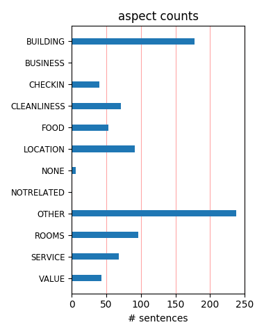
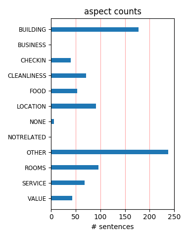

We stayed for 2 nights and had a great time. We have stayed at the Roman Spay several times over the last 20 years and always come away relaxed and refreashed. It is clearly the best place to stay in Calistoga if you're looking for a Romantic getaway.
For over at least 10 years, this is the only place we stay at when we go to Calistoga. It is consistently clean, well kept and comfortable. We love going in between their three pools and their tropical gardens make us feel we're in paradise! Highly recommend.
The hotel is centrally located in town and has it's own spa called the Baths. Love their mineral bath and massages. The best thing about the Roman spa is the mineral pool and therapy spa. We love to go down after dinner and hang out in the pool, it is delightful.
Every year my girlfriend & I get away for a girls vacation. We discovered the Roman Spa Hot Springs Resort and it is ALWAYS on our itinerary. The pools are the best!! We love the way the hotel is laid out, the landscaping is lovely and having the spa next door is so convenient.
This was our second visit to the Roman Spa in the last year and a half. We stayed eight nights both visits. The cleanliness of the rooms, pools, and grounds are notable. Friendly and responsive staff add much to a visit. The location is great and allows walking to all Calistoga spas, restaurants, and shopping.
We live in Napa and for many years we have been loyal fans of the Roman Spa Hot Springs Resort. We stay here several times each year and every visit is perfect. The mineral pools are wonderful, the gardens enchanting and the rooms are elegant and spacious. We highly recommend this resort to all who want to relax in a lovely environment.
Roman Spa provides a pleasant atmosphere for total relaxation. The rooms are clean and attractive with comfortable beds. Management and staff are friendly and efficient. Calistoga is an interesting historic setting in the beautiful Napa Valley with fine restaurants and interesting shops. We experienced an exceptional brief holiday getaway.
Roman Spa is the best property in Calistoga. The rooms are always clean. The gardens are very well kept. The pools are very relaxing. The entire staff is very friendly. It is not a fancy hotel, just comfortable. We have been going there for 20 years. We have tried other properties, but always go back to Roman Spa, becasue they are the best!
We have been staying at the Roman Spa In Calistoga for the past 15 years, tried others but this is the best. Rooms with or without kitchens are very clean and reasonable. Service is great and the grounds are like a garden setting. Outdoor pool and spa plus indoor pool. Across the street from the mueseum and a block from downtown, you have it all.
The Roman Spa is truly a wonderful find. The pools were fantastic and we used them in and out all day and into the evening. Our room had everything we could have needed and the beautiful gardens right out our door felt like the tropics!! The staff was friendly and the restaurants and store just around the corner was most convenient. We loved all!!!
Walking into the Roman Spa you feel the wonderful pleasent atmosphere right away. The pools were very relaxing. Even though I only spent one day I left feeling I was on vacation for an entire week. The service was quite up to par especially the manager Pauline. She was so friendly and knew so much about the area. Roman Spa is a place you must visit!!
Roman spas always provides a relaxing and enjoyable stay. The grounds are beautiful with two mineral pools and a mineral jacuzzi as well. My sister and I love the grounds because of all the flowers and plants and pool side tables and loungers. The rooms are very comfortable as well and the town with shops and restaurants is an easy walk from the hotel.
The rooms were nicely decorated, a little noisy, but we ran the fan so we wouldn't hear the neighbors tv. We had a kitchen to cook our own meals, and spent alot of time in the 3 mineral pools. THe grounds are nice, with lots of trees and plants, and a BBQ area. We looked at other hotels in the area when we went for a walk, and decided this one was the nicest!
My friends and I have stayed in two other spas in Calistoga over the years, and since we discovered The Roman Spa Hot Springs Resort, we have looked no further. For the value, the location, the amenities, the cleanliness, the service, the friendliness of the managers and staff, this spa cannot be touched...It is true gem. We are already booked for next fall.....
My husband and I could feel the stress melting away as we soaked in the mineral pool, the jacuzzi and had the couples massages. It was so relaxing and calm and we swore to do this again soon. The staff was so welcoming and the resort is in the perfect location , a 2 minute walk to main St. Calistoga. Rooms are clean and spacious and the rates were very reasonable.
We live in Ashland Oregon and often visit family in the San Francisco Bay Area. We stopped in Calistoga some 17 years ago on our way home from SF and stayed at the Roman Spa. We so enjoyed the beautiful grounds and the 3 mineral pools that we make it a point to visit at least once and sometimes twice a year. The Roman Spa and Calistoga is our favorite spot in the Wine Country.
I'm very fortunate that this is my third visit to one of Calistoga's premier spa resorts. The grounds were breathtaking and filled with beautiful flowers and koi ponds. We were able to have a picnic by the pool after a wonderful morning in the spa decompressing from our daily lives. The central location makes Calistoga dining and shopping a breeze! Looking forward to visit #4!...
Calistoga Nov. 8 & 9th, 2006 This was our second visit, having stayed only one night last year. Very relaxing experience. Enjoyed all of the pools and the other guests. Grounds were very clean. The room was very clean, but the bed was not comfortable and the pillows were too hard. This will not deter us from coming back. Staff was very friendly. Looking forward to our third visit.
My gal pal and I stayed here for a Girl's Night and thoroughly enjoyed ourselves. We had massages at Roman Spa, went shopping at the local boutiques and had a delicious dinner at Checkers Italian Restaurant, finished off with a relaxing swim in the Hot Springs swimming pools located at the resort. The beds are super comfy and the resort is very peaceful. I would definitely stay here again.
Our group of five comes here several times a year for the hot water and good times. Staff is always nice and our suite of two rooms adequate. We have a grand time - lots of good restaurants within a block of walking, an outdoor and indoor pool and a jacuzzi to choose from to relax in and the place is well-maintained with lots of flowers. Price could be cheaper, but can't do much about that.
I have stayed here several times over the past several years (15). The staff is always accommodating, the rooms are always clean. Love the mineral pool and the location cannot be beat, right off the main street of calistoga. Lots of good restaurants within walking distance. I would recommend this to anyone who wants a nice relaxing stay. The adjoining spa with mud baths are excellent for before bedtme. very relaxing.
My daughter, three of her friends, and Mother (me) traveled to the wine country for three days of wonderful good food,refreshing body treatments and total relaxation. The Roman Spa is truly a remarkable experience for adults. The rooms are emaculate and well appointed and the three therapy pools also beautifully kept with grounds and flowers to equal the islands. We were able to barbeque our meals and dine elegantly. Thank you Roman Spa!!!!!!!!
My husband and I discovered this spot about 10 years ago and have returned 2 to 3 times a year ever since. We love floating about the mineral pool, gazing up into the tall palms above... The grounds are well-kept with beautiful flowers in the spring. The perfect place to relax and get away from it all. Calistoga offers several fine restaurants and is fun to just kick around in. We've also rented bikes (flat!) and tooled about... LOVE the Roman Spa!
This is one of our favorite getaway spots...we were there on Halloween weekend, and there was a totally delightful parade down the main street, adding to the overall charm of the weekend! Calistoga is always full of surprises! There are three mineral pools at Roman Spa; two with jets, and one that is a swimming pool. It was raining while we were there, and they supply umbrellas if you want to use the outdoor pool! It is always a great time, even in the rain!
My Girlfriends and I go to The Roman Spa Resort twice yealy and have never been dissapointed. The rooms are always neat and clean, and reception is friendly and available to help with anything. The three hot pools are never too hot or too cold, and the gardens are absolutly beautiful with humming birds flying about the many nector feeders. The property is quiet and most condusive to relaxation, it is also very close to the mian shopping area. We will never go anywhere else!
My mother & I searched the Internet for a great place to stay for the birthday. Roman Spa Hot Springs Report looked nice. ....Well it was everything stated and MORE....., VERY clean, large rooms, beautiful grounds, and very friendly staff. We haven't slept as good as we did here, in a looong time. We purchased their wonderful pillows before leaving. The Mud Bath at the spa was spectacular, and the assistants were very friendly. I LOVE, LOVE, LOVE this place, and can't wait to go back.
We spent 4 days at the Roman Spa on our honeymoon and had a most wonderful time. Be aware - this is not one of the big hotel chains so no fancy high tech facilities, no wi-Fi and no restaurant What you do get is VERY comfortable accommodation, kitchenette - excellent little supermarket around the corner so you can eat in (Healthier & cheaper) without restrictions on menus etc. The staff were helpful and friendly and the spa is for being thoroughly spoiled! And the location is close to everything
My kids and I go to the Roman Spa at least once a year. It's relaxing for me and a treat for the kids. Calistoga in general is an adult destination for honeymoon couples and wedding parties, and wine tasters. At the Roman Spa, we've found a place where kids are welcome too. We usually get a kitchenette and hang around the warm mineral pools for most of our visit. The rooms are clean and there are always hundreds of flowers blooming on the grounds of the hotel. It's a nice retreat for the whole family.
April 11, 2008 Sue Duvall Rossi We should be in Kauai right now. Yes, we are part of history, Airline history. April 7th to 14th in a free condo and ATA Airlines went under. So, we thought of Calistoga and the Roman Spa. The Roman Spa is the only place we ever stay, coming almost every year when we can. We love the proximity to Main St. and all the restuarants and shopping. We absoutly love the lush and beautiful gardens the pools and piece and Quite. Highly Suggest you come and Enjoy, Sue Duvall Rossi
The Roman Spa is in the heart of Calistoga, and easy to walk anywhere in town from it's convenient location. The pool is warm year round and they have a very large indoor hot tub that's mineral water soothes your skin and relaxes you beyond belief. The rooms are clean and spacious. Our room had a kitchenette included. There are BBQ's and picnic tables around the beautiful landscaped grounds if you decide you would like to eat in. The Roman spa is our one and only choice of lodging whenever we visit Calistoga.
We generally visit the Roman Spa Resort about every other year. The Roman Spa is a great place to kick-back and relax after the hectic pace we sometimes find ourselves in, in our daily lives. The heated pool is very special to us because we can feel the tension disappear as we float and or soak in its heated waters. The indoor Jacuzzi further relaxes our tensions and is a good pre curser to a vigorous swim in the pool after a soak in the hot tub. The Spa staff is always very helpful and very polite and cheery.
My girlfriend and I decided it was time for a little rnr awy from it all. After searching allover online we decided on roman hot springs based on a friends recommandation. The price was right, the rooms were clean and very comfortable, and the mineral pools made the deal that much sweeter. Three different temp pools to splash around in and relax. The location was great just off the main street and close to everything. We had an amazing time and didn't want to leave. Fantastic wine tasting throughout the area as well.
We stay at the Roman Spa Hot Springs Resort for our anniversary almost every year. It seems that the hotel is improving. The hotel is small enough that we had the pools to ourselves in the morning during our mid-week stay. We love the flower filled gardens. The staff was friendly and helpful. There were good quality linnens and towels available. The location is great because it is on a side street and it is an easy walk to the main street where the restaurants are. Staying at the Roman Spa was like a healing retreat for us.
The Roman Spa is good quality for the money. It is a basic motel with a spa on the premise. The grounds are well landscaped with a heated pool and indoor jacuzzi. The people were very friendly. The room was clean and updated and the location is one block from all the restaurants and shops. The night we were there was cold and rainy so not too many people outside. What i did notice is there are lots of chairs and tables outside of the rooms with ash trays on them. Would not be too appealing if people were outside your room smoking.
My wife and I stayed at the Roman Spa hotel on a recent visit to Napa Valley. The hotel is an older hotel that has been updated and is very clean. The pools and hot tubs are fantastic. I could have spent all day in the regular pool which is 92 degrees all the time from hot springs. They also have a lot of really nice community seating areas and grills for customers to use. The location is excellent as well. The hotel is located within walking distance of many restaurants and shops. The hotel is an excellent value in an excellent location.
i am writing this review which is my first on trip advisor to warn you do not stay here. i know it has good reviews and the website makes it look really nice. this is in no way a spa or resort at all. the walls are thin between rooms, the rooms are overpriced and outdated, the "mineral waters" are some crappy pool and jacuzzi that dont even seem sanitary. I expected a nice stay with decent rooms and actual relaxing hot springs, this place did not even come close. save your time and money and stay anywhere else. dont say you were not warned.
While the pool was nice and rooms were clean, the people who run this place are so cheap they would not even put a coffee pot in the room, or shampoo/skin lotion, or drinking water. And, since the front desk is closed from 9:00 PM till 8:00AM --, there is no chance of getting any of these items there. And, in the morning, when I asked about it, the front desk clerk was ruder than rude, completely unapologetic about the fact that, for close to $200 a night, you don't even get drinking water! I can't say the place sucks, but the attitude sure does!
This was about my 20th trip to the Roman Spa. I haven''t been in about two years. It was like going home. This is the best place on the planet to restore your soul. I always forget how wonderful it is until I get there again. It is welcoming, clean, the staff couldn't be more helpful and the other guests are interesting and friendly. Then there are the mineral pools. What a spectacular place to restore. Gardens are great and it is relaxed, nothing required but a bathing suit and willingness to enjoy. I will go back again in three months. It won't be two years again
I have been returning to the Roman Spa when I am looking for time away in peaceful and tranquil space. he accomodations are very comfortable with kitchenettes and barbecue grills. The gardens are lovely with wide varieties of flowering plants and shrubs, koi ponds and hummingbird feeders. There is a larger mineral pool, 2 hot tubs with varied temperature and sauna facilities. And when you are ready for more pampering, there is the "Oasis Spa" to meet your needs for a massage, mudbath or facial.The Roman Spa is itself an oasis of tranquility and relaxation. It's a great spot!
We have been enjoying the Roman Spa since 1984 and our visit in January was just as enjoyable. The three mineral pools range from approximatley 95 degrees to 105 degrees so everyone has a choice. The grounds are well maintained with the main outdoor pool surrounded by flowers, shrubs and trees. The warm waters are so relaxing, one always feels rejuvenated after spending time here. The rooms have undergone renovation and are very clean and quiet. This is definitely still our favorite place to unwind in Calistoga. With shops and resturants a short walk away, your car stays put.
We had made reservations to stay for a particular day and due to my husband having his days off changed made a request to change the reservation after the official time allowed. We also had my sister and her husband in another room on the same reservation. They were very gracious about accommodating us. The property is beautiful and the pools well maintained. The only thing I missed was in room coffee. The beautiful flowers more than made up for that small inconvenience. We have stayed there in the past and have always enjoyed it very much and it is out favorite place to stay in that area.
We are long time Roman Spa devotees. It is always a wonderful experience. The rooms are comfortable, quiet, and spotless. The 3 different pools are perhaps our favorite, however. We love to go when it is raining and float in the big pool with the rain gently coming down. The arbor is full of hummingbirds in season and the fountains and landscaping are always meticulous. You park and just walk to fabulous restaurants and shops in Calistoga. Roman Spa even gave us a discount coupon for the Flatiron Grill this time. We loved our latest stay. Some small improvement is always noticeable each time.
2/28/7: We just returned from a very relaxing trip up to the Napa Valley. Our stay at the Roman Spa was perfect for what we had in mind. A little wine tasting by day, then return to a very soothing soak in their 3 mineral pools. Your skin feels so soft after a few hours in the pools. It's also a great way to start the day as well. The rooms are OK, nothing fancy, but clean. The grounds are very nice and well maintained. Excellent selection of plantings. The location is at the very end of the Napa valley, so it is away from most of the crowd. The town is is very quient with some good restraunts.
Can't speak to the hotel, but got a mud bath and massage at the oasis spa that's attached to the hotel. The treatment was fine -- pretty much the standard calistoga mud and mineral bath. The spa itself is in a little trailer that they've fixed up right next to the hotel. It's nice enough, but don't expect anything super fabulous. Only real drawback is that the facilities are kind of small, so you can hear people moving around and talking while you're trying to relax during the massage. I'm not sure there's anyplace better in calistoga -- my sense is that these places pretty much do the same sort of thing.
The Roman Spa is an excellent Hotel for groups of people to gather and visit. My friends and I have been going to this Hotel for over 10 years and we will be going back soon. The atmosphere is quiet and relaxed with three different hot pools to relax in. The staff is alway nice and they put out wonderful coffee in the AM so you can get a cup and jump in the water and start your day relaxed. The location is great too because there are several great restaurants within walking distance so no hassles with cars. The shopping is fun and its just a short drive to check out different wine makers. Always a fun weekend. Enjoy
Roman Spa Hot Springs Resort in Calistoga is a wonderful place to relax for a short getaway. It is one of many places with mineral pools from the natural hot springs in the area. Calisotga is a beautiful historic town with good restaurants and beautiful old houses --a fun place to walk. Roman Spa is in an attractive flowered setting with clean comfortable rooms and a friendly staff. The beautiful surrounding wine country of the Napa Valley features many wineries large and small that are fun and interesting to visit. Roman Spa provides a convenient and enjoyable primary experience within the larger stimulating environment.
We have just returned from a 4 day at the Roman Spa Hot Springs. The resort is magnificent and we have never experienced such incredible service before. Warm mineral pool and jacuzzis were great. We did not get out of the water for all 4 days. The Spa is out of this world. We paid $249 per night for a room l which we thought excellent value. There were 2 queen beds so the 3 of us shared, full kitchen, fridge, microvawe, toaster, dishes and everything you need. We baebwqued at the gas and charcoal grills available outside and used picnic tables. Overall I would say this is probably the best hotel we have ever stayed in on holiday.
The Roman Spa in Calistoga, CA is my idea of the perfect getaway. Its laid back atmosphere, wonderful mineral pools that leave my bones feeling like rubber after a long and satisfying soak, cheerful and pleasant staff and lovely surroundings full of exquisite flowerbanks and towering palms all contrive to lead me back there at intervals that never seem often enough to me. I'm a writer, and there's rarely a day when I don't fantasize about going back to that little Eden, so understated and lacking in the usual pomp and fluster that most hotels sport, it holds almost a magnetic attraction for me. My kids call it my obsession. I call it heaven!
I love the Roman Hot Springs. It's clientel is mosly in their 60s and up, but that's what makes it relaxing and unpretentious. It's a great location, walking distance (like 2 minutes) to down town with an excellent coffee shop right across the street. The place needs serious updating -- the rooms feel like rest home rooms styled like it's1974. For this reason, it's not a good value at all. It's way too pricey to not have any re-investment done on it. If you're looking for modern luxury, hit up the Indian Springs. If you are looking for low key, relaxed and to feel really really young (if your under 60 years old), hit up the Roman Hot Springs
My teacher/school secretary buddies and I have been taking a weekend pilgrimage to the Roman Spa in Calistoga, CA, "forever." Amazingly, it just gets better and better. The accommodations are so clean and fully equipped, and the grounds so pampered, we always have a relaxing, enjoyable time. With an outdoor pool and jacuzzi plus a large indoor jacuzzi, bar-b-ques, picnic tables and little groupings of tables and chairs, and steaming coffee in the morning, one can spend an entire weekend on-site if desired. We have many choices for our weekend getaway to the wine country, but we keep returning to the warm and inviting Roman Spa. We just love it!!!!
I've been coming to this spa at least once every year. The place is very pretty but more important it is clean. The ladies and men who clean the rooms and keep everything in order seem to be always working and very friendly. I love the three different pools and the temperature of the waters. The only thing I can see missing is there is no coffee maker in the room and the office staff do not open till 8 AM for coffee for guests. This is disappointing when all you want is a cup around 6:30 or 7 AM in your room. In traveling I have found even the cheaper motels/hotels offer an assortment of breakfast selections for guest if they can make it to the office.
We thoroughly enjoyed our time at the Roman Spa Hot Springs resort. The grounds were beautiful and very well maintained. There were flowers planted everywhere on the grounds. The patio area was very private because of all of the plants. The pool area was also relaxing. There was an outdoor pool and hot tub and an indoor pool. All were very clean. There were also grills for barbecuing. We were impressed with how clean they were. The room was clean with very comfortable beds. The pillows and bed coverings were of very good quality There was also a mini-refrigerator and coffeemaker. The staff was very friendly. We enjoyed our experience. We would love to come back.
We have been coming to the Roman Spa for 2 to 3 days (at least 4 times a year) for 30 years, both together as a couple, with our family and with friends. The rooms are very well appointed, the grounds are well kept with new flowers blooming per season and the pools (3) are well maintained and very inviting. However this trip required alot more personal service than we ever have needed in the past. One of us had a medical emmergency during our stay and the staff and personal provided us with the best of care and concern. This is a public expression of our thanks to them for the efficient manor they extended to us in our time of need. A great resort and service all in all.
My husband and our two teenage daughters stayed overnight to "take the waters". It was clean and comfortable. The 3 pools were all well maintained and relaxing. Though we did not use them, they had nice picnicing/outdoor dining tables in their courtyard with grills available to use. We had two rooms with a fridge, both clean and functional. My girls and I had massages at the adjoining spa and they were nice. The location is great. Close to the downtown and the restaurants and shops so we could walk. We had appetizers at the Chinese restaurant and then cocktails and calamari at Brannan's and then pizza and salads at Bosko's. Fun and a way to kill an evening with some teenagers in a quiet town.
Horrible experience. Paid nearly $200 for room with expectancy for nice relaxing time. After getting our room and settling down we noticed we could clearly hear the people in both the rooms next to us. Decided to ask for another room and they offered an upgraded room for no extra cost w/ nobody staying on either side. Sounded great except for the people in the room above us. To make a long story short we only slept about 3 hours because the place was so noisy. We checked out the next morning but we were suppose to stay another night. No refund for my first night stay. If you are expecting a quite place this is not the place for you. If noise doesn't bother you then it is ok. The hot springs were great.
A somewhat 'shabby-chic' resort reminescent of the Caribbean which is popular with seniors and has probably seen better days. It could do with freshening up. The rooms are average, clean but tired with a stained. cracked sink in our bathroom. The 3 hot spring pools have cracked, stained paving around them. The gardens though are well kept and provide shaded areas among the flowers to relax. However at a total of $140 (inc tax) per night for a 2 queen room which had no coffee maker, no microwave, no internet access and no breakfast, it does not offer much. Coffee is put out in the morning only in the lobby otherwise you need to go to restaurants for all meals. An interesting place to visit but you feel it could do so much better.
THE ROMAN SPA in Calistoga, Ca. offers a romantic, relaxing getaway in Napa Valley's wine country. Large, clean, comfortable well-appointed rooms at reasonable rates surround a large thermal pool in a beautiful garden setting. Two therapeutic pools and saunas are just a step away. The ROMAN SPA offers mud baths and massages and the helpful staff gives tips on restaurants and shops on Calistoga's main street, just a block from the resort. Across the street is a fascinating museum with Disney's Oscars and historical displays. Nearby are premium wineries, a state park and a faithful geyser. We return every year to the ROMAN SPA after the holidays and brought Seattle friends this January. They were delighted and want to come back next year.
My husband and I just returned from another fabulous stay at the Roman Spa. Each year I yearn for this spot as a birthday destination because it is the most pleasant stay in this area! I can leave the car in the parking lot until we leave town. We feel safe, the rooms are clean, the staff is super friendly and accomodating and the prices are usually manageable. The different pools help to soak all the tension out of my muscles. The nearby restaurants and bookstores and shopping options are fun. The wine country and St. Helena's Culinary Institute are very close. The aesthetics of the spa's courtyards and all the options (rooms with kitchenettes or simply refrigerators and the like) all entice me to return year after year. The air is even clearer up there!
my mom and 5 year old daughter stayed here for 2 nights. we paid for a double w/ a kitchen for about 150. i was surprised how roomy it was and we used the kitchen for every meal except one dinner. the mineral pools were therapeutic for my feet and muscles. the pool area was very nice with flowers, hummingbirds and CLEAN. the big pool outside is at a very comfortable temperature [92 ish? ] ,the hottub 104 and the indoor pool was about 98. they were all awesome! it is a place to relax and most of the guests respect that. we will go again with the whole family next time. the only disappointing experience was my facial at the oasis spa, i guess i have had much better. i would go somewhere else for that and the massage pretty good. romans is the perfect get away.
My husband and I only stayed for one night at the Roman Spa Hot Springs Resort because we have family in Calistoga. We wanted to enjoy the spa experience and were not disappointed. We had a lovely, very comfortable room with a spa tub. It was very relaxing and we also used the three hot springs pools in the beautiful courtyard. The resort is within walking distance of the market and many wonderful restaurants. It was so romantic and relaxing to have a delicious dinner then a refreshing short walk back to our room where the spa was waiting. We picked up dessert at the market and were able to enjoy it in our room later with a bottle of wine as there was a refrigerator in the room. They also have complimentary gourmet coffee. We will definitely stay there again!
Left work a little early on Friday afternoon - picked up 2 girlfriends and hit the road. Easy drive to Napa Valley - did a little wine tasting on the way. Easy check in at the Roman Spa, parked the car and didn't have to use it for the rest of the weekend. Got unpacked, changed into swimsuits and hit the mineral pools for a soak. The grounds were beautiful, rooms are neat and clean. Comfortable beds. We had a room with a kitchenette so we saved money by eating in. We walked to the grocery store only 2 blocks away. The resort is one block off Calistoga's main street with great shops and restaurants. Booked a mini bliss treatment in their spa for the next day. It was wonderful and after it was over went back to soak in the pools. It doesn't get better than that.
Notice how many reviewers have been coming here for many, many years? That speaks volumes to the Roman Spa experience. While the rooms and grounds are well maintained, things haven't changed much over time.That's a good thing. It's a wonderful place to come and relax, especially with a small group of friends. My husband and I have been coming here with two other couples for at least 10 years (we know because we used to smuggle a now 13-year old into the pool when she was only 3!). While floating in the warm water, we can make the important decisions about what time to get massages, which wineries to visit and where to walk for dinner. The grounds are lovely and laid out so that groups can hang out together without bothering other guests who prefer to read or nap by the pool.
One of the greatest finds in Napa Valley is the Roman Spa. It is located right off the heart of town, central to food/shopping and 10 minutes from wineries.. But most of all, it is extremely inviting, the pools are immaculate, clean, warm and never overly crowded. The grounds are very well maintained, with beautiful flowers, and waterfalls all throughout. I discovered this place a few years ago, and try and make it my little getaway twice a year to become relaxed, and rejuvenated. Once I spend a few days up hear in the mineral waters, relaxing, I am ready to face the world again. And it is always best to spend a little more to get a room with a small kitchen. This is well worth the few extra bucks, for the convenience of extra space and a refrigerator, stove, microwave and nice kitchen table.
This was a unique experience. I have been to more than 80 countries, and I have stayed in better places in third world countries. It took the receptionist 25 minutes to find the reservation. We waited. Once we did get to the room, the first impression was a musty odor that met us at the door. The bed was incredibly stiff. Carpets were worn. The air conditioner made such a racket we couldn't sleep. The pools smelled of chlorine and were unexceptional. This in no way felt like a retreat or resort, like they advertise. It's an old Motel trying to pass for a resort. We were very dissatisfied with the Roman Spa Motel. We recommend that readers dig further into the reviews here, like we wish we would have done before spending so much for so little. It turns out there have been many unhappy guests here.
The Roman Spa is everything you are looking for in a spa. The rooms are spotless and the beds are luxurious! Our room had a fully equipped kitchen allowing us to have our meals in if we preferred. The three pools are fabulous beyond words and steps from our room. All we really needed to bring was our bathing suits and a robe! The main street through the charming town of Calistoga is walking distance from the spa with unique shops and quality restaurants right there. Once you park your car, there is no need to move it until its time to go home! The grounds are lovingly maintained and the gardens are beautiful with the daffodils in full bloom and hummingbird feeders everywhere! My traveling companion is handicapped and the staff accomodated our request for a ground floor room near the pools. Our visit was superb!
I have been to this resort a few times now. It just keeps getting better. They recentaly just added the mud baths and spa which now you never have to leave the resort. We stayed in the kitchette style rooms. We enjoyed having that convience of a kitchen in our room. The gardens and the 3 pools are what makes this place so tranqul. The grounds are beautiful and so quiet. The staff is wonderful and so nice. They were very accomodating. The grounds also boast beautiful gas grills as long as charcol ones too. This is wonderful for big groups or reunions. The tables are always clean and so are the pool areas. I would reccomend this place to anyone who wants some peace and quiet. They are just one block over from the main drag, so walking is always an option. Come and feel spoiled like the Roman Gods. I will be traveling back soon.
In August and December of this year, my mom, sister, & I stayed at the Roman Spa. Every year for the past 15 years we have met at the Roman Spa and enjoy a 3 night stay. We absolutely have a great time. Relaxing in the warm pool, enjoying the jets in the hot tubs, inside and out, and enjoying every minute of spa time. We always reserve a room with a kitchen so we can enjoy our meals outside on the patio. There are many reasons why we keep returning to stay at the Roman Spa. Beautiful plants and very clean grounds, hot coffee and cookies in the lobby every morning, squeaky clean pools, endless supply of towels, great maid service, and a massage/spa business a few feet away. We have everything we need. Yes, we wlll continue to return to the Roman Spa because they do spoil us rotten and we love it. Thank you Roman Spa for being a great place to stay. signed Karen
My huband and I just recently returned from a peaceful and relaxing extended weekend at the Roman Spa Hot Springs in Calistoga. We return to this heavenly resort every year in February or March to have a weekend to rest and enjoy the beautiful surrounding of the Roman Spa. Not only is the heated pool and indoor Jacuzzi used, but the peaceful and beautiful grounds at the Roman Spa are something we look forward to visiting. The flowers are beautiful. We have some friends who join us on this wonderful weekend and on the grounds they have available picnic tables, along with BBQ's to use. This year they have added a gas BBQ and it was great! We met our friends, who were also staying at the Roman Spa, for dinner out at the picnic tables and really enjoyed ourselves. We also love the friendly visitors and staff at the Roman Spa and we have made this a tradition for years to come.
We hadn't stayed at the Roman Spa For some time but thought it was time to give them another try. In the last few years we have stayed at Dr. W's, the Calistoga Spa, and Solage. Our room was clean and comfortable and the bed actually firm [!]...features that are to be expected. But the pools were at perfect temperatures, one warm, one intermediate and one HOT. Again features that are expected in Calistoga... What sets the Roman Spas apart though is the service that the staff provides and the grounds. Every employee that we encountered was working hard to provide an environment that is relaxing. The grounds are simply amazing! Pots of tulips and daffodils in full bloom; other plantings well cared for; pathways clean and swept. Many small things but the sum is a great place to stay in Calistoga. AAA gives it 3 stars; I give it 4! Will we stay there again?? You can bet on It!!
My friends and I have stayed at the Roman Spa many times over the past 22 years that we have been going to Calistoga. The rooms are very comfortable and they have upgraded them with new white comforters and new ruffle dusters. The bathrooms have been upgraded with new tub/shower stalls and very fluffy soft towels. The room we stay in has a kitchenette with all new utensils, pots/pans, toaster, etc. The grounds are full of different flowers and greenery and kept up nicely. They also have a really nice outdoor swimming pool and indoor sauna. You don't have to go far for a massage as it is all connected to the Spa. It's also really great that they are so close to the main street and we only have to walk about one block to the main street where you can shop or go to all of the different restaurants that Calistoga has to offer. We have always enjoyed our stay here and plan to go back in November.
I wasn't sure what to expect from the Roman Spa since it's a motel and the rooms are a little bit older; however, I had a lovely stay. It was the best value we could find for the high season and my friend lives nearby and goes a lot. While yes, the rooms / bathrooms could use an upgrade, once I was there it really wasn't a detractoin and honestly i just didn't care. The place is immaculately clean. I even walked by and saw them cleaning the public bbq's and they just gleamed they were so clean. I seriously want to know their secrets. The grounds/gardens are just lovely as well and the pools are perfect. Three different pools with different temperatures, each just right! The photos here on tripadvisor really do give a good sense of this hotel. I did wish there was an iron in the room however (since lots of people on vacation in napa indulge in high end dining) rather than having to ask for one.
This Inn is probably the best for your money in Calistoga - understand that it is a very (and I stress very) small town and most of the hotels and inns were built in the 70's. My husband and I thought this place did a great job for the money. I've stayed at hot spring resorts in Arizona and Palm Springs so I know what a resort looks like - I wouldn't call this a resort but it did have three fabulous hot springs of different temps and there were not children in the pools. Of course I could have just lucked out with that. Anyway, we had a wonderful time. We stayed in room 134 which is upstairs and has a massive whirlpool (largest one I have seen in a small inn) that has natural spring water coming thru the tap. I loved that the best. The service was great, the atmosphere was wonderful, walking distance to all the shops and restaurants, the bed wasn't the best but we would stay at the Roman Spa again.
My sisters (all five of them) and I make a yearly reunion to the Roman Spa Resort. Even living so close to one another in San Francisco, our lives are so busy that we hardly get to see each other, but this is one reunion that no one cancels out on. We’ve been going to the Roman Spa Resort for our yearly three-day weekend for six years. The rooms are pleasant and comfortable and we always reserve rooms with kitchens so that we can prepare breakfast and eat out in the beautiful garden and lunch at the picnic area so that we can barbeque. The pools are wonderful (both indoor and outdoor) where you can relax all day – in fact, until 10:00 at night, and the sauna and dressing rooms at the pool are impeccable! To us, it is always a good sign when we meet other fellow Roman Spa regulars and to see the same pleasant, friendly faces of the staff year after year. Good job Roman Spa Resort and thank you and you……..See you next year!
We were driving through the area and thought that Calistoga would be a nice place to stop for one night. The Roman Spa is a decent place to stay but is not a resort by any stretch of the imagination. It's an old establishment and shows it, but generally is comfortable. The rooms are updated, but the air conditioning unit is dismal. It was impossible to find a good setting during the night, it was either too cold, but when you turned it up a bit, you woke up sweating. Lots of older couples there which I thought was endearing. The baths are quite old and the tiles are fading badly, but that didn't seem to bother anyone. The reception and service seems to be an afterthought for those who work there. With the exception of a nice young lady, they would just let you stand at the counter indefinitely as they walked back and forth doing "their work". It's okay for one night, but I didn't feel it lived up to it's description on the website.
Ahh at the Roman Spa. From the moment we arrived "ahh" was murmurred repeatedly by myself and the three friends I was traveling with. Ahh at the beautiful grounds, ahh at the very clean and pleasantly decorated rooms, ahh as we first dipped into one heated mineral pool and ahh as we dipped into another. Ahh as we relaxed at tables outside our door in a tropical courtyard setting and sipped our wine. Ahh as we relaxed into our beds and slept soundly. Ahh as we awoke the next morning realizing we had the luxury to enjoy another ahh filled day. Our second day included spa-ahh treatments, located literally across a driveway - which is very convenient, as you can wear your bathrobe to and from the appointment and are able to return to your room thoroughly relaxed after a heavenly massage. Even as we departed from the Roman Spa after our wonderful two nights, we still had the ahh feeling. And on our drive home, we contemplated when we could return for another ahh visit.
My mother and I stayed at Roman Spa for two nights and had a wonderful time. I grew up in the Bay Area and always remembered a first grade teacher who had brought back stories of mud baths in Calistoga (she also taught us sign language and the basics of massage!). The staff at the spa and hotel front desk were friendly and professional. During our stay, we enjoyed the mud bath, mineral bath and 1 hour massage combination package, went back to our room for a nap, then went out to St. Helen's for a nice dining experience at the Culinary Institute of America. What a treat the whole day was! My mom enjoyed the mineral baths and pool the next morning, and we did some shopping in Calistoga. The shops on the main street in town are less than a block away from Roman Spa, and everything was very convenient. Roman Spa also gave us a dining coupon for a few of the restaurants in town. We left with some wonderful memories and yes, bought 6 of the pillows featured during our stay (so comfortable!). Thank you Roman Spa!
Recently my friend & I took a rather spontaneous trip to the Napa Valley wine country without making advanced plans for accomodations. By the end of our wine tasting day, we were delighted to receive a recommendation from a friendly wine pourer at the Rosenblum tasting room in Healdsburg, CA. She told us about the Roman Spa Hot Springs Resort in Calistoga where she & some girlfriends had gone several times when in the area. When we arrived in the early evening we were greeted by their attentive staff and were quite pleased by the reasonable pricing of their rooms. The room was clean and tasteful but not overly pretentious. But the best part were the three roomy spa/pools of varying degrees of heat to relax in at the end of our day. Two of which are outside amongst the gardens and the third was inside just off the patio, so you can easily go from one to the next depending on your heat preferences. The evening air was cool and it was truely relaxing. We will definitely go there again, and recommend it to our friends.
I took my granddaughter to the Roman Spa Hot Springs Resort to celebrate her 17th birthday. My husband and I had stayed there and I thought she'd enjoy getting away. I am happy to report...She Loved It! Our room was spacious and clean. The people staying at the Spa turned out to be friendly, which was an added bonus. I was surprised at how often my granddaughter wanted to relax by going into all three mineral pools. Staff is friendly and helpful and most accommodating. The Roman Spa is only a short block from Calistoga's Lincoln Avenue so we were able to eat, shop and take leisurely strolls through the town. My husband and I did have spa treatments when we were last there and the service/treatments were good. This time, construction was underway as the Spa is remodeling. We were forewarned and the noise did not bother us as it stopped by 4:30 pm. My granddaughter wants to return and I know my hubby and I will be back for another visit. Can't wait to see the improvements and spend another few days in the mineral pools.
The Roman Spa in Calistoga is a wonderful place to go for pure relaxation. The grounds are lovely with seasonal flowers and decorations to celebrate the particular time of year. We just returned from an October weekend and enjoyed the beautiful fall colors in the flowers and the pumpkins and squash clustered around the flower beds. The rooms are attractive - very clean and well equipped. There are three mineral baths, a large outdoor pool, a smaller indoor pool and a very warm jacuzzi. You can float around for hours and feel absolutely weightless and wonderful. There are many chaise lounge chairs around the pool and picnic tables with bar-b-qs in different areas outside the rooms. Our favorite part of the stay is enjoying the massage and spa treatments at the Baths which are located across the parking lot from the hotel. The service is excellent and you can be completely pampered. We have been going to the Roman Spa for 10 years, in every season and in every kind of weather and have always enjoyed the most relaxing and stressfree times.
My best friend and I just returned home after a two-night stay at the Roman Spa. As usual, it was invigorating to our senses and filled us with a sense of wonder. Even in the chilly winter air, it is a mystical and magical place with the steam rising from the clear-blue mineral water. The temperature of the main pool is just right for lying on our backs, doing leisurely laps or standing by the side. While in the pool, the plants and flowers surround us like a Tropical Paradise. Yesterday we were looking deep within the Blue Spruce tree for the whirring of wings of a humming bird. I cannot speak highly enough of this place, for it is perfect for friends, couples, families or even coming solo for a refreshing get-away. It feels like coming home every time we return, for the ambience of the place, the decor of the rooms and the warm hospitality of the staff are inviting to our weary bodies/spirits. If you want a vacation filled with adventure, relaxation, sensual delights, and connection with the local shops/ restaurants, then this is the place for you! Enjoy!!!! Alameda, CA
We needed a break! And the Roman Spa offers large family suites - two twin beds for our girls (9 and 16) and a king for us in two seperate spacious rooms with a full kitchen. Decent bathroom and nice clean accommodations. But picture this - we all soaked for two hours once we arrived - the three pools accommodate all temperature requirements - from piping hot for the adults, to moderate and warm for the whole family. If you're looking for one of those 'real' spa tubs - large oval tiled ones, not pathetic little modern ones - there's one here! Also you can slip from the hottest into the coolest over the edge - no clambering around in the cold to refresh! Then, the kids opted for pizza in the room, while we walked one block to have a lovely meal and excellent bottle of wine. Finish off the night with more soaks - and start the day the same way and you have yourself a very relaxed crew to start the rush again. This is not the spot for you if you're looking for fancy facilities and pretentious surroundings, but if you want LOCATION, charm and comfort - you'll find it. We'd be back.
We have being going to the Roman Spa for years and it is our favorite place for a 2-3 day get-a-way. We traveled though a snow storm from Lake Tahoe to get there and couldn't wait to get in the pools as soon as we checked in. We requested and got one of the rooms upstairs overlooking the pools, great view of the mountains and the quint city hall of Calistoga. The location of the Roman Spa is excellent for walking to any of the fine resturants in town plus the local supermarket. It's also a quick drive to any number of wineriers, which is an other reason we go there. This time we headed north on Hwy. 128 into the Alexander Valley to visit a few wineries, a beautiful drive on a windy road. Our main reason for staying there is the well maintained grounds and the three mineral pools. The one indoor pool is great for soaking with it's jacuzzi jets and a nice sauna to bake in. But I love the outdoor pool sitting next to the hot tub. Hopping into the 104 degree hot tub and then into the larger cooler big pool for a swim is great. A super place to soak and relax and of course enjoy the wine country.
My sister and I chose the Roman Spa Hot Springs for a 3 day getaway because of sentimental memories of our late mother vacationing there once or twice a year. The hotel is clean, well-organized, with beautiful grounds and with kitchen units available, we were able to stay on a reasonble travel budget.The staff were unfailingly courteous and provided helpful input on where to eat in the town,including some discount vouchers for some popular restaurants. But as always, the real highlight is "taking the waters". With 3 different pools/spas,the waters work their magic of unknotting tense muscles and softening the edges of life. My skin, usually so dry, becomes magically soft and silky after just one soaking there. Conveniently located, across a small parking area, is the associated Oasis spa, where we enjoyed mud baths,herbal soaks and massages. I felt like I had been away for a week, not just 3 days! The town is fun to explore, with a great little museum, fun quality shops and many fine restaurants. I hear that there is also great hiking around there, but we did not take advantage of that. Next time!
We just returned from 2 nights at the Roman Spa. We had a very relaxing and happy visit there. The rooms, grounds, pools and spa are a perfect place to rest and rejuvenate. The staff people are very pleasant and helpful. Our room was spacious and clean. Our only recommendation and thoughts for improvement is that they provide a coffee maker and microwave in the room. These are increasingly becoming standard fare in more and more hotels and motels. Our room included a kitchen area with refrigerator and stove; but there were no cooking tools, plates or utensils provided rendering it useless. The grounds are very lovely and well-maintained with three pools of varying sizes and temperatures. We enjoyed just relaxing in and out of the water for hours. The thermal waters here are definitely therapeutic. The spa has been remodeled in recent years and is very attractive and serene. We had excellent massages by Kelly and Matt after our mud treatment and cool down. The experience was great as always. We will definitely come back to Roman Spa for the a stay and spa treatments, and enjoy the lovely environment at the motel.
We stayed at the Roman Spa as part of a two week trip around California, and were not disappointed. It is very close to the centre of Calistoga and we were able to leave the car at the hotel whilst we walked around town (even the wonderful Calistoga Inn, which is at the other end of the main street and where we went to for dinner, was only a short walk). The room itself was a bit dark, but not too bad, and the bed was comfortable enough. The grounds were very pleasant, with landscaping around the pools. The pools themselves (2 outdoor and 1 indoor) seemed clean and were lovely to wallow in! We didn’t try any of the spa treatments, but the treatment rooms looked a bit down-at-heel and we probably would have gone elsewhere for the treatments if we’d had time. The main criticism is that they don’t provide any breakfast beyond a cup of coffee – it wouldn’t be difficult/expensive for them to provide some pastries and it would save guests having to venture out for breakfast in the morning. All in all pretty good value for money, but don’t expect the rooms to resemble luxury spa accommodation – they are closer to motel standard.
Roman Spa in Calistoga has some surprises and some modest disappointments. Over all it gets a thumbs up from our family. The pools are it's attraction - 1 for swimming and 1 regular sized jacuzzi just off of that. But, inside no less is a larger jacuzzi type pool w/ locker rooms and such. The pools and the in room jacuzzi's, if you book that type of room, have "hot" mineral water, beautiful landscaping and a fish pond hidden nearby the big pool. The room was large, modestly appointed and clean. The in room jacuzzi would fit you and 3 of your closest friends if you so desired. WARNING: the mineral water is HOT. Be careful in your room jacuzzi! It is near main street and several other spas and several very good restaurants - see restaurant comments separately! The Wine Garage is nearby for bargain hunters of good vino and it is located in the heart of what will become the newest regional wine appellation. For all of that it was a bit pricey and although you have a small refrigerator in your room, you don't get your own coffee pot. Has cable, but no premium channels. The layout is more like a Best Western, than a fine hotel, can be noisy. Have fun. Enjoy.
We just returned from a 4 night stay at the Roman Spa. I have not kept count but I would guess that this is our 20 + stay. We usually go twice a year for a family reunion of cousins which Calistoga is pretty central. The help is fantastic. All the way from the office to the maid and grounds men. Friendly, willing to help and very helpful if needed. The facilities are kept in perfect condition. For example, each morning the maid group go around and wipe the outdoor tables and chairs as well as the pool funature of dust and dew. These is a beautiful patio area with eating tables and Weber BBQ [bricketts] as well as a gas cooking facility. These are cleaned daily. Rooms are very clean, made up efficiently and we have never had any problems of any type at the facilities. They have three heated pools, one large outdoor, medium indoor and a hot tub type thing. I'm sure that you could find something less expensive although in my opinon, Roman Spa is not expensive, but you will not find anything with the amenities that it has for the price. [They even have loaner umbrtells in stredgit location when the weather in inclement] Can't wait to go back in the spring.
We recently stayed 2 nights and loved it, great place to soak in quality hot spring pools, which thankfully contain only a minimum amount of chlorine. The hotel rooms do have a pedestrian, motel simplicity that will irk some, but we found our room to be perfectly adequate, the bed very comfy, and we loved the quiet ambience at night, which made for long, deep sleeps. At the end of the day, I'm at a spa hotel like this for the rest, health, and relaxation benefits, not for fancy hotel room frills. I saw a lot of older folks during our visit, regulars who have been faithfully coming to Roman Spa for years. We, too, hope to make regular future visits. Other notes: The hotel is perfectly situated just off Calistoga's main strip, lots of great dining options a stone's throw away. In many ways this hotel, its no frills simplicity is reflective of the laid back, Bohemian vibe of Calistoga, which is the antithesis of the more snooty, more expensive, more artificial feel of Napa town. If you appreciate this distinction, you'll have no trouble falling in love with a place like Roman Spa Resort. Oh, and we loved the palm trees and lush gardens surrounding the pools and property; you really are in a kind of oasis when staying here.
We checked in and things were fine, people at the front desk were nice and helpful. It is a block off the main street with a ton of places to eat, so that was nice. When we got to the room, the door was open - wide open, which I think was strange. The room was very clean. It needs an update, new decor, the whole 9. The room was also dark, even with the curtains open, so we had to have lights on all the time. The bed was HARD! I had to toss and turn because my sides and back would hurt. The grounds were nice. Lots of plants everywhere. We went in the "mineral pools" but there was a strong chlorine smell, so we didn't stay in very long, plus there were kids everywhere, so it was hard to just relax and enjoy the warm water. There were a lot of families with children, which was fine, but they were running amok all over. I over heard a conversation with a hotel staff member and a guest, and apparently someone let their kids sleep in the car in the parking lot all night! All in all the stay was OK... I am not happy I paid almost $200 for 1 night, but it was Memorial Day weekend... The website made the place look like a resort, and I must say... it is FAR from a resort! I would stay again, but I would never pay that much again!
My wife and I stayed the nights of October 26th and 27th. Checkin was great, our room was close by the construction but they did not start to later in the morning and then even then you could barely hear them. The garbage trucks are a little noisy but it is not that big of a deal, it helps you to get your day started a little early. We used the barbecue on our first night and they were so clean that they looked like they hadn't been used even though they get used alot. We spent most of our 3 days just floating in the pool and laying out in the sun, very stress free and relaxing. The rooms were in great shape, very clean, comfortable beds with lots of pillows. We did not have any issues with check in or check out, we were told 2 pm was the checkout time for the pool but it was not enforced, maybe because it was not very crowded. My wife and her girlfriends come up on an annual trip in June and the wife and I try to come up once or twice during the year. The attention to detail concerning the grounds is out of this world, they are constantly pruning, planting, and cleaning without ever bothering anyone. If you are looking for a party atmosphere this is not the place but if you just want to hang out and relex then this is for you.
My friends and I have been enjoying the Roman Spa for over two decades now, and it does not disappoint. The staff is friendly and the maid service is efficient (we were gone for an hour for breakfast and by the time we returned the room was cleaned). The three spa pools offer different temperatures (large outdoor pool is 92-95 degrees, the medium indoor pool about 100 degrees, and the small outdoor jacuzzi is 104 degrees). There are also separate men's and women's saunas. While the rooms could use a style update, ours was clean and had a small but nice bathroom. Our room had a kitchenette which was convenient, but since the spa is located only steps away from a variety of restaurants (high, medium and low end), we just used it for the refrigerator and early morning coffee. What has always been the draw for us, besides the pools, is the landscaping. There beautiful dark wood vine arbors and there are always seasonal plantings. At this time of year, the mums are plentiful. Pumpkins had been placed abundantly in the gardens, including a monster big one outiside the office door. I was hoping for cooler fall weather, but had to live with glorious, sunny mid 80s weather during my stay. Oh well, that just means coming back again later this winter when I can count on a chill in the air even mid-day.
Picture a harried working woman, trying to juggle all my responsibilites and forgetting to place my reservations for the designated hotel set aside by the wedding party. Yikes! I had missed the deadline for the wedding party prices. I began a quick search over the net, and kept coming back to the Roman Spa Hot Springs Resort. The site looked good, the response of the proprietors was prompt and I made my decision immediately. I do have a propensity to follow my gut feelings and again it worked to my advantage. Prices were affordable. and the place was convenietly located in Calistoga. The front desk, the housekeepers, the head of housekeeping were all so gracious. They seemed to radiate a feeling of serenity and family spirit. The hotel was very clean, pretty foliage and an awesone geothermal pool inviting me in. I had several festivities surrounding the wedding, however every chance I had I hopped into the indoor jet therapy pool followed by the outside geothermal pool. What a place to unwind. I loved .the noodle floaties that the hotel provided. Floating about I socialized with several people, some who asked me how I had found "the best hotel in Napa" as they had been routinely staying there for getaways for over 17 years! I plan to make this my weekend getaway for many years to come. Hope I can get reservations.
When my mother told me we were going to the Roman Spa to soak in natural mineral tubs, I had no idea just how lovely it would be. The three pools run from regular "hot tub size" and quite warm-- to the sizeable "swimming pool size" pool outside. I was in heaven. As I very much enjoy simply relaxing in the water, the pools are idyllic. I found all very comfortable, and relaxing, as well as stimulating---when moving from one to the next! The landscaping of the Roman Spa is expertly done. It is beautiful! The colors are vivid, truly stunning. We loved the blue toned spruce trees, and flower-lined paths. It is a real pleasure to lounge in the pool area. We also found the other guests generally very "down to earth" and friendly. Everyone seemed to be enjoying themselves. The rooms were nice, and very clean. Our bed was particularly comfortable. As others have mentioned, the location is perfect. You are a block from downtown, and kitty-corner from a uniquely done, and cozy cafe that serves organic fair trade coffee, and has funny quotes on the walls. The Roman Spa is also literally across the street from the Calistoga Museum, a rare treat, and window into the cities fascinating history! --And it's free! (donation if you like;) Suffice to say, we enjoyed our jaunts around this lovely town. I highly recommend the Roman Spa!
We wanted a winter getaway. We chose the Roman Spa for its collection of water resources. Namely the outdoor pool, indoor Spa and Outdoor hot tub & sauna. The amenities are wonderful with your choice of different water temps in each water source. The staff is always willing to accomodate. There are outdoor gas BBQs for those who are inclined. The rooms are clean and the property manicured, with a variety of flowers and humming bird feeders to soothe your senses and lots of lounging furniture to relax in. However if you are into room decor, you will be disappointed in that regard as the decor is 70s and very bland. The mattresses are average, no pillow tops or luxury bedding. The effort is put into the outdoor aspect, but the indoors has much room for improvement. Taking that into consideration, I felt the rates are a bit on the high side. Unless you are willing to pay a hefty amount for dining I would recommend getting a kitchenette which will allow you time to lounge and relax rather than taking time to hunt around for food. The grocery store is just on the other end of the block from the hotel, very convenient a big plus. The property is the most convenient and has the most amenities in Calistoga. I know I've been going to Calistoga for a good 20yrs. and have searched other facilities. All in all, its the best spot in the area.
The website for the Roman Spa Motel promises gardens, spas, and "European Style Lodging", but it nothing more than an older motel with ordinary pools and a few plants. Everything looked run down, especially their scary "full service spa" building at the back of the property. The bed sheets were rough, the mattress was stiff, and there were very few amenities -- this is not what I would call a "resort". I feel that their website is misleading. And, in spite of the glowing reviews you think you're finding here, just go through the list a bit, especially the oldest posts...you'll find many people who agree with what we experienced. We were hoping there would be an ironing board and iron in our room. When we called to request them, we were told that they were out of irons! They were also lacking in other basic amenities. This Motel needs to improve their noisy A/C units. It has poor sound insulation, and I was kept awake by other guests all during the night. The place appears to have been built sometime back in the 1960's or older, which would account for the lack of noise insulation. The pool might be heated with the aid of a natural geothermal aquafer, but the pools aren't filled with pure water from it - they smell of chlorine. We couldn't wait to leave the next morning. There are better, less expensive accomodations near by in Calistoga, look for them.
I stayed at the Roman spa ths weekend and was deeply disappointed. For $200 a night I expect a little more than your average stay at a Motel 6, but that was not the case here. The room was clean, but no more than that. Beds are uncomfortable, the maids don't bother with fresh sheets or towels, there was no iron in the room and not even a can opener that worked in the kitchen. Also, the pools were filthy dirty. When I called to complain about the pool, the young woman who answered the phone snorted at me and said "I have no idea why you are calling and telling me this, no one else has complained!" I asked to speak to a manager on Saturday and was first told that she would be at 10:00 am. I went in to the office after 10:00 a.m. and was told no manager would be available until Monday. Why would you run a "resort" with no manager on site during the month of August? I called on Monday, and was told there was no manager in on Mondays! Again, no service seems to be the mantra at the Roman Spa. I do not know where the Roman Spa gets their staff, but as a small business owner, I would never put up with rude staff. I have stayed at many hotels throughout the world, and many in the Nape Valley and I can honestly say that good service can over come many flaws in the hotel busness. The Roman Spa has many flaws and they do not even attempt to address them, let alone provide the service for which people are paying.
It's not that I'm "easily entertained" or "easy to please", considering 2 factors...#1 I still live in the same town I was born in (Jackson CA) and my daughter that accompanied me...age 16...is 5th generation AND #2 I am a single mom for many years, working part-time to raise my two daughters (oldest is 26, now married, + 3 yr. old grandson also living here!)....Well, on line and in my AAA travel book, Roman Spa Hot Springs looked absolutely beautiful, and I was under the impression the photos weren't taken near the "1 or 2 only tiny garden areas" to deceive us. I believed that the whole facility was to be gorgeous. See, it's been a rare treat to "leave Dodge" on a memorable afforadable get away. And Roman Spa Hot Springs didn't disappoint. We could hardly contain our excitement even at our check in, "we knew" we found the perfect hotel. On the phone and in person, the employees were great, glad we were there. We lacked for nothing visually - every inch of the spacious property was loaded with flowers, trees, and shrubs, inviting umbrella tables (25??) and lounge chairs, 3 pools with varying tempereature degrees of Calistoga Mineral waters. Also, several soothing fountains, nooks and crannies everywhere! The lighting at night was delightful! Our room was amazing, spacious, clean, tastefully decorated. All was quiet and soothing. Someday, we will back. Maybe even "next time". Thank you, Roman Spa Hot Springs for helping make this a blessing my teenager and I will never forget. Thank you!!
My family and I have been coming to the Roman Spa for approximately 8 years. Every New Years we come for a four day visit. We spend a great deal of time in and around the hot spring fed pools and jacuzzi's. The staff has essentially remained the same throughout the time we have been coming to the the Roman Spa. They are friendly and helpful. While young family members are welcome the Roman Spa encourages these youngsters to behave themselves in and around the pool areas so as to not disprupt the serenity of the grounds. The rooms are clean, modern, and are kept up. There are kitchenettes in some units, kitchens in others, and some just have a microwave & small refrigerator. There is no free WiFi internet available which is something that I would encourage the Roman Spa to take a look at adding in the future. However they do have a PC in the lobby for guests to check their emails, which is a good alternative. The actual Spa treatments are next door and the one thing I would encourage is for a small price break for spa treatments to Roman Spa Resort guests. As it is folks that come in off the street pay the same rates for spa treatments as resort guests. My suggestion is make it more enticing for a resort guest to do a spa treatment especially ones that are staying multiple nights. All in all, I have no complaints. The Resort is very clean, the grounds and landscaping are fantastic, with a Spanish/Mission style motif. There is adequate parking and everything in town is within walking distance.
We've been going to the Roman Spa as part of an annual vacation for 30+ years. It's a lovely, quiet resort within easy walking distance of the main street of Calistoga. The grounds are filled with flowers and kept in immaculate condition. The pools are protected and warm and can be used comfortably even in cool weather. The rooms are kept clean, and the bedding is comfortable, but the place is showing its age a bit, especially in the restrooms. I believe all rooms have a coffee maker a mini fridge, and some rooms come with complete kitchens. They are in the process of building a new wing, but at this point the construction noise is not intrusive, and we were given rooms farthest from the construction. We have found in the past that early morning garbage pickup off site can be very noisy. This time we were traveling with my son, his wife, and their 6 month old baby. They enjoyed their stay, but the rules about no child under 4 within the pool enclosure meant that the baby wasn't even allowed to sleep in his stroller near his parents as they used the lounges or pools. The mud spa and massage area is really showing its age and needs to be updated, though the attendants are very good. Lately, the resort has become more restrictive about check-in and check-out times, but we were pleased to be allowed to check in shortly after 1 p.m. and were allowed a "late" check out of noon. Most of the clientele is middle-aged or older. This is not a young people's party place, something we appreciate, but others might not. Overall, we continue to enjoy our visits, which are now always in the spring or late fall, and we would be disappointed to lose this gem.
We have just returned from our recent stay at the Roman Spa hotel in Calistoga, California. We are very happy to submit a glowing review for this unparalleled relaxation and rejuvenation spot. We have stayed at several other places in Calistoga in the past, as we love the area - but after our first visit to Roman Spa many years ago, we never go anywhere else due to its excellent value, its lush garden-like landscaping and the three superb mineral water pools. Each pool is delightfully warm, one slightly warmer than the next. The geothermal mineral water in the pools is truly a special pleasure to soak in, and it leaves skin very soft, among other benefits. We take advantage of the 2-night internet specials for midweek nights only. This provides the best rate for the best hotel in the area. There are more expensive and perhaps more luxurious rooms at other hotels, but for overall relaxation and rejuvenation at pricing that is conducive to said relaxation, Roman Spa is by far the best value. The rooms are clean and simple, and tastefuly decorated. The hotel offers free coffee, and other seasonal specials if you check the internet. For those who enjoy wine-tasting, Calistoga is at the 'high end' of the Napa valley, and has numerous specialty wineries within minutes from the hotel. Additionally, the nearby Palisades range offers spectacular vistas for the excercise-minded vacationer who enjoys hiking or biking. Right next door is the Oasis mud bath and massage spa, only a few feet from the hotel. Combine a package at Oasis with a stay at Roman Spa for one of the most comprehensive relaxation treatments available anywhere. We can't wait till we can return again, and enjoy poolside coffee while soaking in the therapeutic waters!